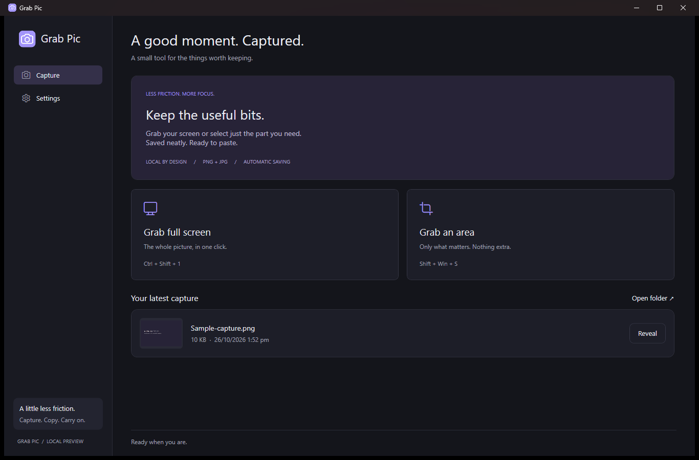
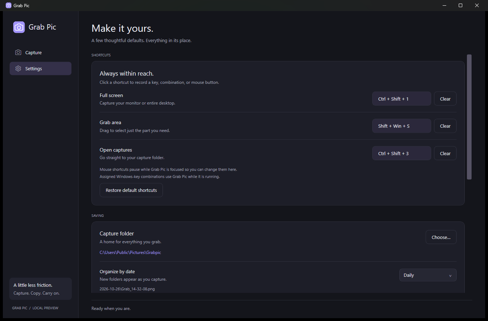

The whole screen. Or a little of it.
Capture your current monitor, all connected monitors, or drag to select an area.
Free & open source · Windows 11
Keep the useful bits. Grab your screen or just the part you need, get it on your clipboard, and let Grabpic organize the saved copy.
Windows 11 · Intel / AMD x64 · No account required

The everyday screenshot workflow, with a few thoughtful defaults.
Capture your current monitor, all connected monitors, or drag to select an area.
Copy captures to the clipboard automatically. The app stays quietly in the tray.
Save PNG or JPG images in daily, weekly, or monthly folders. Choose the location that works for you.
Your shortcut. Your way.
Assign keyboard combinations or mouse buttons to Full Screen, Grab Area, and Open Captures. You can even use Win + Shift + S for Grabpic while it is running.
Open the app when you want to see your latest capture. Taking one won’t bring the window forward.

No uploads, ads, or analytics. Captures stay on your computer, and clipboard-image monitoring is optional and off by default.
Grabpic is published by Owl Dev under the GNU GPL v3. Study it, contribute a fix, or tell us what would make your workflow easier.
The Microsoft Store listing becomes downloadable after approval and publication.